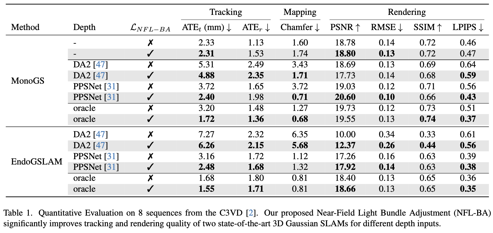

NFL-BA: Improving Endoscopic SLAM
with Near-Field Light Bundle Adjustment
Andrea Dunn Beltran*, Daniel Rho*, Marc Niethammer, Roni Sengupta
University of North Carolina at Chapel Hill
*Equal contribution
[Paper]

Abstract
Simultaneous Localization And Mapping (SLAM) from a monocular endoscopy video can enable autonomous navigation, guidance to unsurveyed regions, and 3D visualizations, which can significantly improve endoscopy experience for surgeons and patient outcomes. Existing dense SLAM algorithms often assume distant and static lighting and textured surfaces, and alternate between optimizing scene geometry and camera parameters by minimizing a photometric rendering loss, often called Photometric Bundle Adjustment. However, endoscopic environments exhibit dynamic near-field lighting due to the co-located light and camera moving extremely close to the surface, textureless surfaces, and strong specular reflections due to mucus layers. When not considered, these near-field lighting effects can cause significant performance reductions for existing SLAM algorithms from indoor/outdoor scenes when applied to endoscopy videos. To mitigate this problem, we introduce a new Near-Field Lighting Bundle Adjustment Loss \(\mathcal{L}_{NFL-BA}\) that can also be alternatingly optimized, along with the Photometric Bundle Adjustment loss, such that the captured images' intensity variations match the relative distance and orientation between the surface and the co-located light and camera. We derive a general NFL-BA loss function for 3D Gaussian surface representations and demonstrate that adding \(\mathcal{L}_{NFL-BA}\) can significantly improve the tracking and mapping performance of two state-of-the-art 3DGS-SLAM systems, MonoGS (35% improvement in tracking, 48% improvement in mapping with predicted depth maps) and EndoGSLAM (22% improvement in tracking, marginal improvement in mapping with predicted depths), on the C3VD endoscopy dataset for colons.
Visualizations
SLAM
Depth Input
Sequence
Input Video
SLAM Baseline Trajectory
+NFL_BA (Ours)
GT Point Cloud
SLAM Baseline Mapping
+NFL_BA (Ours)
Controls: Click and drag inside the viewer to rotate. Use mouse wheel to zoom. Keyboard arrows ( ↑ ↓ ← → ) to move, 'a'/'d' to yaw, 'w'/'s' to pitch, 'q'/'e' to roll. Click here to reset view to default.
Results

Acknowledgment
This work is supported by a National Institute of Health (NIH) project #1R21EB035832 "Next-gen 3D Modeling of Endoscopy Videos".
Bibtex
We used the project page of Fuzzy Metaballs as a template.